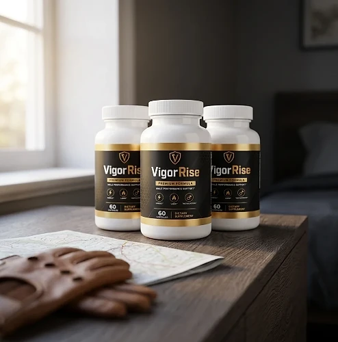
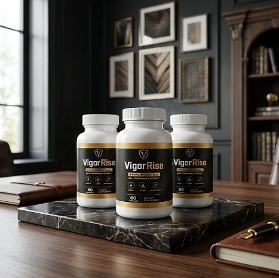
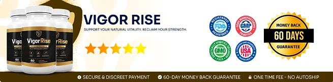

What Is VigorRise And How Does It Work?
VigorRise is a dietary supplement in capsule form designed to support male energy, drive, and overall vitality for men who want to address the low energy, fading drive, and loss of confidence that can build up with age and demanding routines through a natural, dependable approach — without complicated routines or temporary quick fixes.
It utilizes a simple daily serving of two capsules that combines Saw Palmetto, Wild Yam, Sarsaparilla, Nettle Leaf, Boron, Tongkat Ali, and Horny Goat Weed to support daily vitality, stamina, and general male wellness, helping the body maintain its natural balance throughout the day.
The ingredients in VigorRise are botanical extracts and a mineral that, according to the official website, offer targeted botanical and mineral support for men, focusing on daily vitality and energy, particularly for men who prefer one simple daily routine over multiple products or complicated plans.
Rather than acting as a short-lived artificial fix, VigorRise focuses on a whole-formula approach, working gradually alongside daily routines to help maintain steady energy, physical vigor, and long-term wellness.
With consistent daily use, many users report more energy and focus during the day, greater confidence, and a gradual sense of renewed drive, especially when combined with a balanced diet, good sleep, and regular exercise.
From a practical standpoint, VigorRise is a daily male vitality capsule designed to support wellness from within — helping you stay active, energized, and in control of your health.
Made in the USA with globally sourced ingredients and manufactured in an FDA-registered facility, according to the product label, VigorRise is designed for regular daily use, focusing on safety, purity, and quality for those seeking a natural, non-prescription route to everyday male vitality.
VigorRise Ingredients
Every two-capsule serving of VigorRise contains seven active ingredients listed on the Supplement Facts panel, each with its amount disclosed and chosen to support male energy, stamina, and vitality as part of a consistent daily routine:
Saw Palmetto Berry Extract (20 mg): A palm berry extract traditionally used in men's health formulas.
Wild Yam Root Extract (20 mg): A traditional root included in formulas for hormonal balance.
Sarsaparilla Root Extract (20 mg): A root long used as a tonic for energy and physical endurance.
Nettle Leaf Extract (20 mg): A botanical frequently used in men's wellness blends.
Boron Amino Acid Chelate (20 mg): A form of the trace mineral boron, included for its role in men's wellness formulas.
Tongkat Ali (10 mg of a 100:1 extract): A Southeast Asian root, which the label describes as equivalent to about 1,000 mg of dry powder, traditionally used for vitality and drive.
Horny Goat Weed (8 mg of a 10:1 extract): An Epimedium botanical, equivalent to about 80 mg of dry powder according to the label, commonly found in men's vitality formulas.
Together, these ingredients work synergistically to support vigor, endurance, and constant drive from within. A fair observation is that the amounts are modest: the seven ingredients add up to 118 mg per serving. The other ingredients are microcrystalline cellulose, gelatin (the capsule), and magnesium stearate, so the capsule is not suitable for vegetarian or vegan diets.
VigorRise is designed for daily use, offering a natural, non-prescription approach to supporting male vitality, without complicated routines.
VigorRise Side Effects
VigorRise is generally considered well tolerated and is designed for men of different ages and lifestyles who are looking for a safe, natural, and balanced approach to energy and vitality, especially those who prefer an easy daily capsule routine to support stamina, drive, and well-being without resorting to risky solutions with severe side effects.
All ingredients used in VigorRise are described on the official website as natural, stimulant-free, and gluten-free, and VigorRise is made in the USA with globally sourced ingredients and manufactured in an FDA-registered facility, according to the product label, reinforcing consistency, safety, and reliability.
With no widespread reports of serious side effects, VigorRise is generally considered a well-tolerated option. Saw Palmetto, Wild Yam, and Tongkat Ali act on hormones, and Horny Goat Weed acts on circulation, so the official website recommends that anyone who takes medication regularly or has a health problem show the label to their doctor first; this matters most for men on blood thinners, blood pressure medication, or hormone treatments. Ongoing concerns about energy or sexual health deserve a medical evaluation. It is not intended to diagnose, treat, cure, or prevent any disease, and individual results may vary.
According to the label, pregnant or nursing mothers, children under the age of 18, and individuals with a known medical condition should consult a physician before using VigorRise. The label also says not to exceed the recommended dose, ensuring it fits safely within each person's wellness plan.
VigorRise Dosage
The recommended VigorRise dosage is two capsules a day with an 8 oz. glass of water, and it is designed to fit easily into a daily routine, making consistency simple and convenient. Formulated as an easy daily capsule, it requires no powders to mix, no drinks to prepare, and nothing to measure.
The recommended approach, as printed on the label, is to take two (2) VigorRise capsules daily. The official website suggests taking VigorRise in the morning, at the same time each day, which allows its ingredients to work consistently.
For best results, consistency is key. Each bottle contains 60 capsules, a one-month supply of 30 servings, and because botanical support for energy and vitality builds gradually, many customers make it part of an ongoing wellness routine.
There is no need for complex schedules or multi-step routines. One simple daily serving is designed to build lasting support gradually alongside a balanced diet, good sleep, and an active lifestyle. The label also advises keeping the bottle away from heat, light, and humidity, in a cool, dry place, and not using it if the safety seal is damaged or missing.
As with any dietary supplement, it's important not to exceed the recommended dose and to check the label on your bottle. VigorRise works best when used regularly, combined with proper hydration, balanced nutrition, and healthy daily habits.
VigorRise – Refund Policy
You can order VigorRise with confidence, knowing that every purchase is protected by a 60-day guarantee from the date of purchase. This allows you to try the formula and decide if it delivers the support you expect.
According to the refund policy on the official website, refund requests can be made after a minimum trial period of 30 days and must be started within 60 days of the purchase date. Only sealed bottles are eligible, shipping and customs fees are not refunded, return shipping is paid by the customer, and a 20% restocking fee is deducted.
How the refund process works: If you decide VigorRise is not right for you, email customer support to request a return authorization code, then follow the return instructions provided. Once the returned items are received and verified, your refund will be issued to the original payment method, and you will receive a confirmation email.
Customer Support Contact Information: contact@customercs.com or +1 (507) 448-8190, as printed on the product label. The team typically replies to emails within 48 business hours. The team typically replies to emails within 48 business hours.
Refund Processing Time: After your refund is processed, it may take 5 to 10 business days to appear on your statement, depending on your financial institution.
This refund policy is designed to give customers a clear and transparent experience when trying VigorRise.
VigorRise Customer Reviews
-
Michael Thompson — Houston, TXVerified Purchase – 6 Bottles
“If it wasn’t for VigorRise, I’d still be feeling stuck, overwhelmed, and wondering if I’d ever regain my confidence and vitality… But just a few weeks in, everything changed. Thanks to VigorRise, I’ve reclaimed my sense of purpose and strength, and my relationships have never been better. It’s like having a roadmap to the man I always knew I could be!”
-
James Miller — Denver, COVerified Purchase – 6 Bottles
“I was skeptical at first, but VigorRise completely turned my life around. Before, I felt like I was constantly battling low energy, self-doubt, and a lack of direction… Now, I wake up each day with focus and confidence, ready to take on anything. VigorRise made me feel unstoppable again!”
-
Robert Anderson — San Diego, CAVerified Purchase – 6 Bottles
“Before VigorRise, I felt like I’d lost my edge—always tired, frustrated, and unsure of what steps to take next. But within weeks, everything started to shift. Thanks to VigorRise, I’m more energized, focused, and driven than I’ve been in years. It’s the ultimate tool for men who refuse to settle!”
VigorRise – Where To Buy
VigorRise is sold through its official website, so if you decide to try it, it's important to be careful about where you purchase it. The official website is the only sales channel the manufacturer lists, and it does not point to marketplaces such as Amazon, eBay, or Walmart.
Listings on third-party platforms may look similar but cannot be verified as authentic, raising concerns about safety, quality, and ingredient freshness. Products purchased outside the official source may not be covered by the 60-day guarantee.
For this reason, most customers recommend purchasing VigorRise only through the official website. Buying directly from the official source ensures you receive the authentic original product, made in the USA, with access to customer support and the full guarantee. According to the official website, every purchase is a one-time order, with no automatic renewals, hidden fees, or surprise charges.
To avoid counterfeit batches and ensure maximum quality, always verify that you are ordering from the official VigorRise website before completing your purchase.
To ensure you’re getting the authentic product, most users choose to visit the official website.
Is VigorRise A Scam?
Based on what the official website and the product label disclose, VigorRise does not appear to be a scam. It is a real capsule supplement, sold through an established retailer, and formulated to support male energy, stamina, and vitality as part of a consistent routine.
The ingredients used in VigorRise — Saw Palmetto, Wild Yam, Sarsaparilla, Nettle Leaf, Boron, Tongkat Ali, and Horny Goat Weed — are well known in the wellness field, and the label publishes a full Supplement Facts panel with the amount of each one for transparency. A fair point of criticism is that those amounts are small.
In addition to its formula, VigorRise is made in the USA with globally sourced ingredients and manufactured in an FDA-registered facility, according to the product label, which also identifies the distributor, with a city, a phone number, and a support email, with a focus on safety, purity, and consistency.
Many users report more energy, focus, and confidence throughout the day and an easy daily habit, making VigorRise a practical option for those seeking natural support for male vitality. Results vary from person to person, and no supplement replaces medical care or prescribed treatment.
VigorRise is backed by a 60-day guarantee, and orders are one-time purchases with no automatic renewals, recurring charges, or hidden fees. The refund rules, including the sealed-bottle requirement and the restocking fee, are published on the official website, which underscores the manufacturer's transparency with customers.
If you're looking for a simple daily capsule to support energy, stamina, and well-being without complicated routines, VigorRise is worth considering — especially when purchased directly from the official website.
For those who want to verify product details or check current availability, the official VigorRise website remains the safest option.

Check Availability On Official Website
